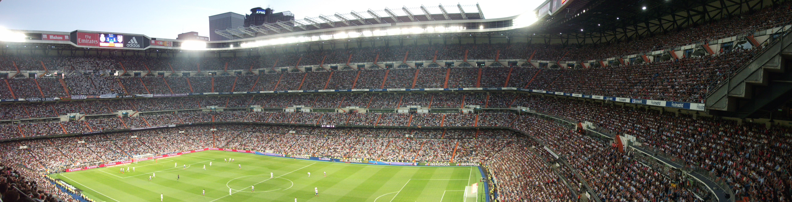

Real Madrid
Hala Madrid y nada mas!
Real Madrid Titles
- Formed: 1902
- European Cup/Champions League: 1955-56, 1956-57, 1957-58, 1958-59 1959-60, 1965-66, 1997-98, 1999-2000, 2001-02, 2013-14
- UEFA Cup: 1984-85, 1985-86
- UEFA Super Cup: 2002
- La Liga: 32
- Copa del Rey: 19
- Copa de La Liga: 1
- Supercopa de Espana: 9
"Los Merengues"
Real Madrid are indelibly associated with the European Cup. They have won the trophy a record 10 times, including victory in each of the competition's first five seasons and the last one in 2014, while their total of 32 La Liga titles is also unmatched. In 2000, FIFA voted them as the most successful club of the 20th century.
Founded in 1902 as Madrid Football Club, the team has traditionally worn a white home kit since inception. The word Real is Spanish for Royal and was bestowed to the club by King Alfonso XIII in 1920 together with the royal crown in the emblem. The team has played its home matches in the 85,454-capacity Santiago Bernabéu Stadium in downtown Madrid since 1947. Unlike most European sporting entities, Real Madrid's members (socios) have owned and operated the club throughout its history.
Early Years
Football was introduced to Spain by students of the Institución Libre de Enseñanza. They included several Oxbridge graduates. In 1895, they founded the club Football goal, playing on Sunday mornings at Moncloa. In 1900, this club split into two different clubs, New Foot-Ball de Madrid and Club Español de Madrid. The president of the latter club was Julián Palacios. In 1902, the latter club split again, resulting in the formation of Real Madrid FC on 6 March 1902. The first president was Juan Padrós Rubió, the first secretary was Manuel Mendía and the first treasurer was José de Gorostizaga. Juan Padrós Rubió would be later succeeded by his brother, Carlos Padrós, from Spain. In 1905, only three years after its foundation, Madrid FC already won its first major title at the Estadio Chamartín. The team won the first of four consecutive Copa del Rey titles, which were, at that time, the only statewide competition.

In 1912, they moved to their first ground called Campo de O'Donnell after moving between some minor grounds. In 1920, the club's name was changed into Real Madrid after King Alfonso XIII, a reputed football fan, granted the title of real ("royal" in English) to the club. When the Second Spanish Republic was proclaimed in 1931, however, the club dropped both the word Real and the royal crown from the emblem, being known from then on and until the end of the Spanish Civil War as Madrid C.F. only. The addition of the purple band to the emblem dates back to the Republican period and has remained there ever since. In 1937, due to the stagnation of the Civil War, all activity disappeared and the club virtually ceased to exist.
Santiago Bernabeu
Before becoming president in 1945, Santiago Bernabéu Yeste had already carried out the functions of player, first-team captain, club maintenance, first-team manager and director in an association with the club that would last nearly 70 years. He was responsible for rebuilding the club after the Civil War and under his presidency the construction of the Santiago Bernabéu Stadium and the Ciudad Deportiva.
Bernabéu also reorganized the club at all levels in what would become the normal operating hierarchy of professional clubs in the future, giving every section and level of the club independent technical teams and recruiting staff, such as Raimundo Saporta. Moreover, under Bernabéu's tutelage, during the 1950s former Real Madrid Amateurs player Miguel Malbo founded Real Madrid's youth academy, or "cantera," known today as La Fábrica.
Finally, beginning in 1953, Bernabéu embarked upon a strategy of signing world-class players from abroad, the most prominent being the Argentine Alfredo di Stéfano, and built the world's first truly multinational squad. During Bernabéu's presidency, many of Real Madrid's most legendary names played for the club, including Di Stéfano, Ferenc Puskás, Francisco Gento, Héctor Rial, Raymond Kopa, José Santamaría, Miguel Muñoz, Amancio and Santillana.
It was under Bernabéu's guidance that Real Madrid became established as a major force in both Spanish and European football. Before passing away in 1978, Bernabéu had been the club's president for 33 years, during which Real won one Intercontinental Cup, six European Cups, 16 La Liga titles and six Spanish Cups.
International Success
In addition to their domestic success, Real Madrid's reputation as a major club was established by their outstanding record in the European Cup. To date, they have been crowned champions of Europe a record ten times. Alfredo Di Stéfano, Ferenc Puskás and other famous players helped the club win the European Cup five times in a row between 1956 and 1960, which included the memorable 7–3 Hampden Park final against German side Eintracht Frankfurt in 1960. The club won for a sixth time in 1966 with the team known as the Ye-Ye defeated Yugoslavian club FK Partizan 2–1 in the final with a team composed entirely of Spanish-born players, a first in the competition. They were also runners-up in 1962, 1964 and 1981. Winning the competition five consecutive times saw Real permanently awarded the original cup and earning the right to wear the UEFA badge of honour. They have also won the UEFA Cup twice and were twice runners-up in the European Cup Winners Cup.
In 1996, President Lorenzo Sanz appointed Fabio Capello as coach. Although his tenure lasted only one season, Real Madrid were proclaimed league champions and several important players arrived at the club, such as Roberto Carlos, Predrag Mijatović, Davor Šuker and Clarence Seedorf, to strengthen a squad that already boasted the likes of Raúl, Fernando Hierro and Fernando Redondo. As a result, Real Madrid, with the addition of Fernando Morientes in 1997, finally ended its 32-year wait for the seventh European Cup in 1998 under manager Jupp Heynckes, defeating Juventus 1–0 in the Final thanks to a goal from Predrag Mijatović. Real Madrid would go on to win again in 2000 and 2002 under manager Vicente del Bosque, with sides including players such as Luís Figo and Zinedine Zidane.
Real Madrid is also three-time winners of the Intercontinental Cup, defeating Peñarol, Vasco da Gama and Olimpia Asunción in 1960, 1998, and 2002, respectively.
The Luis de Carlos Era (1978–1985)
After a brief period as interim president, Raimundo Saporta called for elections. The club's treasurer, Luis de Carlos, resigned in order to run for president. 26 July 1978 was the deadline for candidates to apply in order to run for office. De Carlos submitted 3,352 documents endorsing his candidacy, while the rest—gynaecologist Campos Gil and florist José Daguerre—did not get the minimum number required in time. This called off the election and Luis de Carlos was proclaimed president of Real Madrid.
On 4 June 1980, the Santiago Bernabéu Stadium hosted the Copa del Rey final between Real Madrid and Real Madrid Castilla, the club's second team that was initially founded on 21 July 1972. Castilla managed to defeat four First Division teams—Hércules, Athletic Bilbao, Real Sociedad and Sporting de Gijón—to reach the final. Real Madrid defeated Castilla, coached by the sorely-missed Juanjo, by a score of 6–1.
Later in the year, France Football magazine named Real Madrid "Best European Team" of 1980. The jury took into account the two national titles the team won that year—La Liga and the Copa del Rey—and the fact that they reached the semifinals of the European Cup that season.
Despite the previous year's successes, the 1980–81 season had an unpleasant finish for Madrid. On 26 April 1981, they lost the league title when the victory chant was already being sung in Valladolid. Real Sociedad, who drew 2–2 against Sporting de Gijón in the last minute at El Molinón, claimed the title. Barely one month later, in the 1981 European Cup Final on 27 May, an Alan Kennedy goal gave Liverpool the European Cup title over Madrid.
The professional Real Madrid squad was one of four teams of the Primera División to back the strike called on 11 April 1982. On that day, the Whites played at Castellón with Castilla footballers and defeated the hosts 1–2.
The Final of the 1982 FIFA World Cup took place at the Santiago Bernabéu. In a thrilling match, Italy outplayed West Germany and won 3–1. What most spectators will remember most from that 11 July 1982 was the joy that overcame President of Italy Sandro Pertini each time the Italian side scored.
With the presidential elections on the horizon, candidate Luis de Carlos introduced Alfredo Di Stéfano and Amancio Amaro as coaches of the first team and Castilla, respectively, on 19 May 1982. "The Arrow," as Di Stéfano was popularly known, initially left Madrid in 1964 only to return 18 years later. In the election, de Carlos defeated Ramón Mendoza in the election and Di Stéfano, who signed on for two years, won five runner-up titles in his first year as the Madridista coach.
Once the 1983–84 season had ended, Di Stéfano again said goodbye to Real Madrid. Twenty-one years later he went through the same experience. His contract ended on 30 June 1984 and Luis de Carlos decided not to re-sign him due to the failure to achieve sporting success.
On 12 December 1984, Emilio Butragueño became a European household name with an unforgettable performance against Anderlecht at the Bernabéu. The Belgians were coming off a 3–0 first leg win in Brussels and had the next round of the UEFA Cup in sight, but Butragueño crushed their hopes with a three-goal performance (the others by Valdano [two] and Sanchís) and Real Madrid won convincingly 6–1, progressing on aggregate.
After two brief stints as a director and an election-time defeat to Luis de Carlos, Ramón Mendoza's became president of Real Madrid in 1985, ushering in the dawn of a new era in the history of the club.
Real Madrid's first two UEFA Cup titles were won back-to-back—the first in 1985 against Hungary's Videoton (3–0 at Sóstói Stadion and 0–1 at Chamartín) and the second over 1. FC Köln in 1986 (5–1 at the Bernabéu and losing 2–0 at the Olympiastadion in Berlin).
The Ramon Mendoza Era (1885-1995)
"La Quinta del Buitre" was the name given by Spanish sport journalist Julio César Iglesias to the five homegrown Real Madrid players who were at the core of the team that dominated Spanish football in the 1980s. The name, meaning "Vulture's Cohort" in English, was derived from the nickname given to its most charismatic member, Emilio Butragueño. The other four members included Manolo Sanchís, Martín Vázquez, Míchel and Miguel Pardeza.
 Sanchís and Martín Vázquez were the first to play for the first team of Real Madrid, making their debut at Murcia on 4 December 1983 under coach Alfredo Di Stéfano. Both played surprisingly well, with Sanchís scoring the game's winner. A few months later, on 5 February 1984, Butragueño debuted in an away match at Cádiz. El Buitre was an instant sensation and scored twice. Pardeza was added to the first team that same season and Míchel followed at the start of the next.
Sanchís and Martín Vázquez were the first to play for the first team of Real Madrid, making their debut at Murcia on 4 December 1983 under coach Alfredo Di Stéfano. Both played surprisingly well, with Sanchís scoring the game's winner. A few months later, on 5 February 1984, Butragueño debuted in an away match at Cádiz. El Buitre was an instant sensation and scored twice. Pardeza was added to the first team that same season and Míchel followed at the start of the next.
With La Quinta del Buitre (reduced to four members when Pardeza left the club for Zaragoza in 1986), Real Madrid had one of the best teams in Spain and Europe during the second half of the 1980s, winning, amongst others, two UEFA Cups and five Spanish championships in a row. Their record was only blemished by their failure to win the European Cup, and their continued abject defeats against the far superior Milan side of the time.
Martín Vázquez went to play for Torino in 1990, later returning to Madrid in 1992 only to leave again in 1995 for Deportivo de La Coruña. Butragueño left the club in 1995 and Míchel in 1996, both joining Atlético Celaya in Mexico.
Sanchís was the only member of La Quinta to play his entire career with Madrid. By winning the Champions League twice (in 1998 and 2000), he accomplish what La Quinta had failed to achieve in its glory days. He retired in 2001 as the last active member of the famous cohort at the age of 37.
Lorenzo Mendoza Era
After ten-and-a-half years in office, Ramón Mendoza handed in his irrevocable resignation on 20 November 1995. He was relieved by Lorenzo Sanz, who held recourse to Club by-law 49 to get elected as heir to Mendoza by the 11 directors who continued on the Board of Directors following the transfer of power. On 20 May 1996, Lorenzo Sanz presented Fabio Capello as new head coach of Real Madrid. The Italian trainer landed in Madrid borne out by his five successful seasons with Milan (with whom he won the 1994 Champions League) to replace Arsenio Iglesias, who managed the team on a temporary basis after coach Jorge Valdano resigned. Although winning the league, however, Capello left Madrid after just one season, saying years later did so because he did not settle at Madrid as well as he would have wanted; he returned to Milan.

Replacing Capello was the German Jupp Heynckes, whe led the team to win the much-awaited Champions League/European Cup title, the team's last having come in 1966. In the Final, held at the Amsterdam Arena on 20 May 1998, the Merengues conquered their seventh top European trophy with a goal by Pedja Mijatović against Juventus, who were the favourites on the night. Despite conquering Europe, Heynckes was fired at the end of the year and replaced by José Antonio Camacho, who himself resigned just months later in July 1998 before the actual season even began. The team then hired Guus Hiddink to take the reins of the squad, his first challenge being the 1998 Intercontinental Cup. An extraordinary goal by Raúl in Tokyo sealed a 2–1 end result for Los Blancos over Brazilian side Vasco da Gama. Hiddink, however, was fired just after less than a season, with the Welshman John Toshack replacing him in February 1999. Nine months later, during the 1999–2000 season, Toshack was also fired, the seventh coaching change in just three years.
Under the guidance of new manager Vicente del Bosque, Real Madrid claimed their eighth European Cup/Champions League title. The Final, held at the newly built Stade de France in Paris, would host the competition's (including the European Cup era) first-ever Spanish final, pitting Madrid against Valencia on 24 May 2000. The game Madrid comfortably defeat Los Che 3–0, with goals coming from Fernando Morientes, Steve McManaman and Raúl.
Florentino Perez Era (2000-2006)
2000-2003: Dream Team
In July 2000, Florentino Pérez was elected club president, vowing to erase the club's debt and modernise the club's facilities, though the primary electoral promise that propelled Pérez to victory was the signing of then-Barcelona star Luís Figo. During the campaign, Pérez claimed he had an agreement with the Portuguese winger that would see Figo move to the Bernabéu should Pérez be elected.
On July 16, Pérez won the election and indeed, eight days later, Figo was presented with the number 10 shirt for Madrid. Days later, surrounded by controversy, Real Madrid idol Fernando Redondo, who had openly supported Pérez's opponent Lorenzo Sanz, was sold to Italian giants Milan. During the summer of 2000, Real Madrid signed Claude Makélélé, Albert Celades, Flávio Conceição, César Sánchez, Pedro Munitis and Santiago Solari, although aside from Makélélé and Conceição, the rest had been signed prior to the election of Pérez.
Expectations were high as Los Blancos began the 2000–01 season with the possibility of winning five trophies. The club, however, stumbled at the first test, losing the 2000 UEFA Super Cup by a score of 1–2 to 2000 UEFA Cup champions Galatasaray. Later on, an injury to Fernando Morientes left Real Madrid without a centre forward, but manager Vicente del Bosque improvised by using youth team graduate Guti in the role, with Real Madrid coping and making good start to both their domestic and European campaigns. They were, however, defeated 2–0 at the Camp Nou against rivals Barcelona and were later eliminated from the Copa del Rey by lowly Toledo, as well as losing the Intercontinental Cup final to a Boca Juniors side led by Martín Palermo and Juan Román Riquelme.
 Nonetheless, Real Madrid recovered form and went top of the league table in mid-January, a position they would not relinquish on their way to ultimately winning the title. Madrid also advanced from the second group stage of the Champions League to face Galatasaray in the quarter-finals. Los Merengues lost the first leg in Istanbul 3–2, but recovered to win the tie after a 3–0 victory at the Bernabéu. This would then set-up a replay of the 1999–2000 Champions League semi-final against Bayern Munich. This year, however, Real Madrid would not reach the final, losing 1–3 on aggregate to the eventual champions. Despite the setback, on 26 May, Madrid would crown themselves champions of the first division with an emphatic 5–0 win over Deportivo Alavés at the Bernabéu. Two goals by Raúl and one each by Guti, Fernando Hierro and Iván Helguera would ensure victory and Real Madrid's 28th league title with two matches left to play. Zinedine Zidane (left) and David Beckham (right) were two prominent Galácticos. After reaching an agreement to re-zone and sell the Ciudad Deportiva, Pérez went on to sign Zinedine Zidane in 2001, Ronaldo in 2002 and David Beckham in 2003. The media began referring to the team as Los Galácticos. The strategy, initially dubbed Zidanes y Pavones, meant to integrate world stars and youth team graduates together on the squad. The combination was highly-successful, with Real winning La Liga in 2001 and 2003 and the Champions League in 2002, their centenary year. They also won the Intercontinental Cup, the European Super Cup[3] and the Supercopa de España in both 2001 and 2003. Off the field, the Zidanes y Pavones policy resulted in increased financial success based on the exploitation of the club's high marketing potential around the world, particularly in Asia.
Nonetheless, Real Madrid recovered form and went top of the league table in mid-January, a position they would not relinquish on their way to ultimately winning the title. Madrid also advanced from the second group stage of the Champions League to face Galatasaray in the quarter-finals. Los Merengues lost the first leg in Istanbul 3–2, but recovered to win the tie after a 3–0 victory at the Bernabéu. This would then set-up a replay of the 1999–2000 Champions League semi-final against Bayern Munich. This year, however, Real Madrid would not reach the final, losing 1–3 on aggregate to the eventual champions. Despite the setback, on 26 May, Madrid would crown themselves champions of the first division with an emphatic 5–0 win over Deportivo Alavés at the Bernabéu. Two goals by Raúl and one each by Guti, Fernando Hierro and Iván Helguera would ensure victory and Real Madrid's 28th league title with two matches left to play. Zinedine Zidane (left) and David Beckham (right) were two prominent Galácticos. After reaching an agreement to re-zone and sell the Ciudad Deportiva, Pérez went on to sign Zinedine Zidane in 2001, Ronaldo in 2002 and David Beckham in 2003. The media began referring to the team as Los Galácticos. The strategy, initially dubbed Zidanes y Pavones, meant to integrate world stars and youth team graduates together on the squad. The combination was highly-successful, with Real winning La Liga in 2001 and 2003 and the Champions League in 2002, their centenary year. They also won the Intercontinental Cup, the European Super Cup[3] and the Supercopa de España in both 2001 and 2003. Off the field, the Zidanes y Pavones policy resulted in increased financial success based on the exploitation of the club's high marketing potential around the world, particularly in Asia.
2003–04 season: Wind of Change
The few days after capturing the 2002–03 league title were mired with controversy. The first controversial decision came when Pérez sacked winning coach Vicente del Bosque after Real's sporting director claimed that Del Bosque was not the right man for the job; they wanted someone young to shake up the team. The turning atmosphere continued when Madrid legend and captain Fernando Hierro left the club after a disagreement with management, as did Steve McManaman. However, the club toured Asia in pre-season and introduced newly signed galáctico David Beckham. Pérez and his directors refused to renew Claude Makélélé's contract with an improved salary, upsetting Makélélé who asked for a transfer, eventually moving to Chelsea. In the final days of the transfer window, Fernando Morientes also left the club, joining French Ligue 1 side Monaco on loan. Real Madrid, with newly appointed coach Carlos Queiroz, began their domestic league slowly after a hard-fought win over Real Betis.
Doubts of the team were quelled, however, when Madrid won 7–2 at home over Real Valladolid. The second half of the season then saw the team giving playing time to youngsters and academy graduates, including Borja Fernández, Álvaro Mejía, Antonio Núñez, and Juanfran, as Queiroz opted to rotate his squad. Real Madrid also topped their group in the Champions League, advancing to the quarter-finals after defeating Bayern Munich in the round of 16 2–1 on aggregate. Madrid's on-loan striker Fernando Morientes, however, punished his team in the quarter-finals, as Madrid saw Monaco progress 5–5 on aggregate via the away goals rule and move on to the semi-finals. Madrid nonetheless kept their Liga form high, leading the table by eight point over second-placed Valencia in February. A poor run of form would await them, however, as they were beaten for the first time at the Bernabéu that season at the hands of Osasuna, 0–3. They recovered their points lead after a win at the Vicente Calderón Stadium over city rivals Atlético Madrid, but more disappointments quickly followed; they lost their final five league games at home to Mallorca, Barcelona and Real Sociedad, and also lost away at both Real Murcia and Deportivo de La Coruña. These defeats allowed all of Valencia, Barça and Deportivo to leapfrog them in the table and end the year in up the top three, respectively, as Real ended the season in a disappointing fourth. Their poor performances continued as they lost the final of the Copa del Rey to Real Zaragoza. Shortly after the end of the season, Queiroz was sacked and replaced by ex-Real Madrid player José Antonio Camacho.
2004–05 season
Camacho highlighted the team's poor defensive performances and persuaded Florentino Pérez to spend a total of €45 million on both Argentine defender Walter Samuel and English centre back Jonathan Woodgate from Roma and Newcastle United, respectively, but failed to sign Arsenal's midfield general Patrick Vieira due to his boldness of asking for a galáctico-like paycheck in the likness of Luís Figo's, Zinedine Zidane's, Ronaldo's and David Beckham's. The summer of 2004 also saw the sale of Cameroonian striker Samuel Eto'o, who had been previously loaned out to Mallorca, to archrivals Barcelona.

In addition to the defensive additions, English striker Michael Owen was bought from Liverpool, but the player never settled at Real Madrid. Somewhat ironically, Eto'o would go on to achieve great success with Barcelona in just his first season with the team. Camacho resigned as head coach because of his team's poor performances and was replaced by Mariano García Remón. García Remón's last game was a loss at the hand of Sevilla, where the eventual champions Barça were six points clear from their nearest rivals, and Madrid sitting in lowly fifth. Remón was replaced by Vanderlei Luxemburgo after the winter break, who then signed Thomas Gravesen from Everton to fill the hole in midfield. Madrid failed to progress to the quarter-finals of the Champions League and in the Copa del Rey, but under Luxemburgo Madrid fought hard to earn second place with 80 points, four points behind Barcelona.
2005–06 season: End of an Era
The 2005–06 season began with several new signings—Júlio Baptista (€20 million), Robinho (€30 million) and Sergio Ramos (€30 million)—but the Brazilian coach was not able to find the right formula on the pitch, as Real Madrid's poor form continued and hitting rock bottom after a humiliating 0–3 loss at the hands of Barcelona at the Bernabéu. Luxemburgo would eventually resign and be replaced by Juan Ramón López Caro, the former the manager of Real Madrid Castilla. A brief return to form came to an abrupt halt after losing the first leg of the Copa del Rey quarter-final 6–1 to Zaragoza. Shortly after, Real Madrid were eliminated from the Champions League for a fourth successive year, this time at the hands of Arsenal. On February 27, 2006, Florentino Pérez resigned.[4] Real Madrid eventually managed to finish second in the league but did not pose a serious threat to defending champions, F.C. Barcelona.
The Ramon Calderon Era (2006-2009)
On July 2, 2006, Ramón Calderón was elected as club president and subsequently appointed Fabio Capello as the new coach and Predrag Mijatović as the new sporting director. As new manager of Real Madrid, Capello signed 2006 FIFA World Cup-winning captain Fabio Cannavaro and Emerson, both from embattled Juventus, for a total sum of €23 million; Ruud van Nistelrooy from Manchester United for €15 million; Mahamadou Diarra from Lyon for €26 million; and on a last minute trade-loan José Antonio Reyes, with Júlio Baptista going the other way after a disappointing stint at Madrid. Calderón, however, failed to sign Milan's Kaká, Arsenal's Cesc Fàbregas and Chelsea's Arjen Robben, as he had previously promised. Nonetheless, during the January transfer window, he did manage to sign Fluminense left back Marcelo (€6.5M), River Plate forward Gonzalo Higuaín (€13M) and Boca Juniors midfielder Fernando Gago (€18M).
2006–07 season
On 16 January 2007, Calderón made some very unfortunate comments about the behaviour of some players in the squad and the Santiago Bernabéu fans, which has put the club in a delicate situation. One of the players that Calderón criticised was David Beckham, who, in January 2007, agreed to a deal to play for the Los Angeles Galaxy of Major League Soccer (MLS) at the end of that season. Among others to criticise Beckham was manager Fabio Capello, who at the time vowed never to select Beckham for the team again, although he later withdrew his words. At the end of January, Ronaldo left the club for €7.5 million for Milan. On 9 February 2007, Capello allowed Beckham back onto Real's starting 11 in an away match against Real Sociedad. Beckham played well and scored the equalizing goal in the match, a 2–1 triumph. On 24 February 2007, the Madrid Derby between Atlético and Real at the Vicente Calderón finished in a 1–1 draw, with goals coming from Fernando Torres and Gonzalo Higuaín for Atlético and Real, respectively.
On 7 March 2007, Real Madrid failed to reach the quarter-finals of the Champions League, stifled by Bayern Munich's strong home performance. Despite winning the home leg 3–2, they lost 2–1 at the Allianz Arena in Munich and were eliminated on an away goals tiebreaker. Bayern also scored the fastest goal in the Champions League during that match, after Roberto Carlos lost the ball after kick-off, which led to Roy Makaay scoring in ten seconds.
On 10 March 2007, Real Madrid contested the Clásico against Barcelona at the Camp Nou. Real Madrid took the lead three times after two goals from Ruud van Nistelrooy and one from Sergio Ramos, but were pegged back by a hat-trick from Lionel Messi, including an injury-time equaliser. Despite the sending off of Oleguer, the Clásico ended 3–3.
Real Madrid managed to find their form consistently for the first time all season as they managed to win seven out of eight of the final twelve games, including a 2–1 home win over Valencia on 21 April 2007 and another 3–2 home win over Sevilla on 6 May 2007. Calderón then went on to say that if the team keep up their great play, he was confident Real Madrid will win the league title and end their four-year wait for a major trophy on June 17.
On 12 May 2007, despite not having Robinho and Beckham on the pitch (due to separate yellow cards given in the previous match against Sevilla), Real Madrid took over first place in the La Liga for the first time all season by defeating Espanyol 4–3, coming back from 1–3 first half deficit. Los Blancos were able to avoid a 3–3 draw thanks to an 89th-minute goal by Gonzalo Higuaín. The Sunday after, Barça dropped points with a 1–1 draw to struggling Real Betis. By virtue of their superior head-to-head record, Real Madrid sat at the top of La Liga with four crucial games left to play. The following Sunday, Real managed to beat Recreativo de Huelva 2–3 at the Nuevo Colombino. With the score tied at 2–2, Real Madrid looked set return the lead back to rivals Barcelona until Roberto Carlos scored at the end of the match from a Fernando Gago assist and the squad left Huelva with just three games left to play against, in order, Deportivo, Zaragoza and Mallorca.
On 26 May 2007, Real Madrid put in another excellent performance to defeat Deportivo 3–1 at the Bernabéu. This victory made it six wins in a row for Real Madrid, with goals from Sergio Ramos, Raúl and Ruud van Nistelrooy securing the win. On 9 June, Real played their penultimate league fixture against Zaragoza at La Romareda. The match began badly when Real Madrid were forced to change their starting lineup mere minutes before the start of the match when young defender Miguel Torres suffered an injury during warm-up, tearing his hamstring. In the game, Zaragoza led Real 2–1 near the end of the match, while Barcelona were also winning against Espanyol 2–1.
Real's title challenge looked to be over. A late Van Nistelrooy equalizer, however, followed by a last minute Raúl Tamudo goal for Espanyol, sprang Real Madrid's title hopes back into their favour. Sevilla were also held 0–0 away against Mallorca, which meant that a win at home against Mallorca would effectively secure Los Merengues their 30th Spanish league title.
The title was won on 17 June, where Real faced Mallorca at the Bernabéu, while Barcelona and Sevilla faced Gimnàstic de Tarragona and Villarreal, respectively. At half-time, Real were 0–1 down, while Barcelona had surged ahead into a 0–3 lead in Tarragona; however, three goals in the last half-an-hour secured Real Madrid a 3–1 win and their first league title since 2003. The first goal came from José Antonio Reyes, who scored after a good work from Higuaín. An own goal followed by another delightful goal from Reyes allowed Real to begin celebrating the title. Thousands of Real Madrid fans began going to Plaza de Cibeles to celebrate the title.
Real Madrid recently signed a three-year deal with betting company Bwin.com in June, announcing a shirt deal at the same time that saw Benq Siemens replaced by Bwin.com on the front. The 2007–08 shirts made their first appearance during their title celebration on 17 June 2007.
2007–08 and 2008–09 seasons
On 25 August, Real Madrid kicked off the season in a derby against city rivals Atlético Madrid at the Santiago Bernabéu. It was a highly entertaining display from both sides but Real managed to win 2–1, with goals from Raúl and Wesley Sneijder for Real, while Sergio Agüero scored for Atlético. It was a great start for Real as they showed skill and that they were adapting to the new style of play new manager Bernd Schuster had brought in. On 28 August, Sevilla's Antonio Puerta died after three days in the hospital. The Santiago Bernabéu Trophy, which Real Madrid was about contend for against Sporting CP, was cancelled in honour of Puerta. On 2 September, Real Madrid managed to win 5–0 against Villarreal at the El Madrigal, with two goals from Sneijder, one from Raúl, one from Ruud van Nistelrooy and one from Guti. Real extended their winning streak to three after they beat Almería at home before earning a well-deserved 1–1 draw against Real Valladolid, with Javier Saviola scoring the equalizer three minutes from final time.
Real Madrid's players celebrate their 2008 Supercopa de España win. Four days later, Real remained unbeaten as they beat Real Betis 2–0 at the Bernabéu, with goals from Raúl and an amazing bicycle kick from Júlio Baptista. Real continued their unbeaten run under Schuster by beating Getafe 0–1 away to ensure Los Blancos remain at the summit of La Liga.
Real Madrid has closed out its best fiscal year in history after recording €351 million in ordinary revenue—a 20 percent increase compared to last year—and €83 million in earnings before interest, taxes, depreciation and amortization, a 43 percent increase compared to the 2005–06 fiscal year.[6]
Real began their European campaign well, defeating German side Werder Bremen 2–1 at home thanks to goals from Raúl and Van Nistelrooy and topping their group over Olympiacos, Werder Bremen and Lazio, respectively. However, they lost in the first knockout round against Roma on aggregate 4–2. On 9 December, it was announced that Bernd Schuster had been sacked as manager, and that ex-Tottenham Hotspur manager Juande Ramos would replace him.[7] The next year, Real Madrid also were dumped from the Champions League in the last 16 stage, for the fourth time in a row, after a humiliating 5–0 aggregate defeat against Liverpool.
The second Florentino Perez Era (2009-present)
2009–10 season
After no one of the 2009 presidency election was able to get the necessary funds (€56 million), on 1 June, Florentino Pérez was officially announced as Real Madrid's new president. His first move was to sign Brazilian superstar Kaká from Milan for an undisclosed fee, though believed to be £56 million (€68M).[8] On 11 June 2009, Real Madrid officially announced on their website that an £80 million (€94M) offer for Portuguese Ballon d'Or winner Cristiano Ronaldo had been accepted by his club, Manchester United, after the player had expressed his desire to leave the club for Los Merengues. On 25 June, Raúl Albiol joined Real Madrid from Valencia on a fee thought to be in the region of €15 million. On 26 June, the deal for Ronaldo was finalized, with the player becoming officially a Real Madrid player on 1 July.
On 1 July 2009, it was also announced that Lyon had reached an agreement with Madrid for the transfer of French striker Karim Benzema. The transfer fee was priced at €35 million with the fee rising to as much as €41 million based on incentives.[10] Madrid continued their spending on 29 July, reaching an agreement with Liverpool for the transfer of Álvaro Arbeloa for a fee of €4 million, the same Liverpool paid for the player in January 2007 from Real. Arbeloa signed a five-year contract with Los Blancos. Xabi Alonso, also from Liverpool, was announced as Real Madrid's latest signing on 5 August, with Liverpool receiving around £30 million for the transfer of the Spanish midfielder.

Real Madrid opened the 2009–10 season with a 3–2 home win over Deportivo de La Coruña with goals scored by Raúl, Cristiano Ronaldo and Lassana Diarra. On 15 September, Real Madrid achieved their first Champions League win in the Group Stage against FC Zürich, winning 5–2 in Zürich.[12] On 4 October, after seven consecutive wins in all the competitions, Real Madrid lost for the first time of the season at the Ramón Sánchez Pizjuán 2–1 to Sevilla. On 27 October, Real Madrid were defeated 4–0 by third tier team Alcorcón in the round of 32 first leg of the Copa del Rey.[13]
In spite of the record investment, Real Madrid overall failed to deliver in the 2009–10 season; there was no progress in the Champions League, as they were eliminated once again in the round of 16, this time to Lyon. There was, however, an improvement in Liga performance, and the club forced the title race to go down to go the last game. Nevertheless, Real Madrid finished second again, and once again they lost at home and away to title rivals Barcelona. The club turned to José Mourinho, who had just ended Internazionale's 45-year title-drought in the European competition, eliminating Barcelona in the process and achieving the treble.
2010–11 season
Despite the departure of club legends Raúl and Guti, Madrid saw seven new names join their squad list for the upcoming season: Sergio Canales (Racing de Santander), Ángel Di María (Benfica), Pedro León (Getafe), Ricardo Carvalho (Chelsea), Sami Khedira (Stuttgart) and Mesut Özil (Werder Bremen). Striker Emmanuel Adebayor would later join on loan from Manchester City during the winter transfer window. The 2010–11 campaign started out slowly, with a 0–0 draw to Mallorca, but they soon picked up momentum, despite a draw at Levante in the fifth week of the season. The first defeat in all competitions came in a humiliating 5–0 loss at the Camp Nou to rivals Barcelona on 29 November 2010.
In European competition, Real Madrid came in first in their group, ahead of Milan, Ajax and Auxerre. They eased through the round of 16 against Lyon, and the quarter-finals against Champions League newcomers Tottenham Hotspur, reaching the semi-finals for the first time in eight years.
In April 2011, a strange occurrence happened; for the first time ever, four Clásicos were to be played in a span of 18 days. The first fixture was for the Liga campaign on 17 April (which ended 1–1 with penalty goals for both sides), the Copa del Rey final (which ended 1–0 to Madrid), and the controversial two-legged Champions League semi-final on 27 April and 2 May (3–1 loss on aggregate) to Madrid.
The first Clásico saw Cristiano Ronaldo score his first goal against Barça due to a penalty given to Madrid after a foul to Marcelo. The Copa del Rey Final gave Real Madrid its first title under Mourinho with a header from Ronaldo in extra time. The Champions League semi-final was perhaps the most controversial of the four, with the expulsion of Pepe in the first leg at the Santiago Bernabéu, after an alleged "dangerous challenge" to Barça defender Dani Alves. Alves was carried out in a stretcher "unable to walk," but after Pepe was shown red, Alves came running back into the field within seconds. After Pepe's sending off, coach José Mourinho was also sent off, receiving a fine and a five-match ban. This same match was also controversial in that Barcelona midfielder Sergio Busquets being captured on video saying what seemed like a supposed racial slur to Madrid left-back Marcelo. The second leg was not as controversial as the first, with perhaps the exception of an annulled goal to Gonzalo Higuaín after Cristiano Ronaldo had "fouled" Javier Mascherano as a result of a foul to Ronaldo by Gerard Piqué.
Real Madrid ended the season with a bang, scoring 21 goals in their last four league matches for a grand total of 102 goals, higher than any other side, despite being known as a "defensive" team. Cristiano Ronaldo also became the all-time highest goalscorer in a single La Liga season with 40 goals, ahead of Liga legends Telmo Zarra and Hugo Sánchez. For the 2010–11 campaign, Real Madrid ended as Copa champions, Liga runners-up and Champions League semi-finalists.
2011–12 season
During the summer market for the 2011–12 season, five new players joined the team: Nuri Şahin (Borussia Dortmund), former Real Madrid canterano José Callejón (Espanyol), Hamit Altıntop (Bayern Munich), Fábio Coentrão (Benfica) and French teenager Raphaël Varane (Lens). Real Madrid also disputed the very first Clásicos of the season during the Supercopa de España, where they were runners-up after a 5–4 aggregate loss; Mourinho poked Barcelona assistant Tito Vilanova in the eye during a brawl in the closing stages of this match. Along with five Clásicos in the past campaign, Real Madrid clashed with rivals Barcelona for a record seven times in nine months.
The beginning of the Liga season started out with a 6–0 and 4–2 thrashings of Real Zaragoza and Getafe, respectively. After a rough patch will included a surprising loss to Levante and a mediocre draw at Racing de Santander, Madrid came back, scoring 14 goals and conceding only three in three games.[14]
2013–14 season
A deadline day transfer saw the departure of one of the most influential midfielders over the past few years for Madrid, Mesut Özil. Earlier in that summer, Carlo Ancelotti was named the new coach of Madrid to replace the departing José Mourinho, who had joined Chelsea. Ancelotti's first new signings were the two young talented players: Isco from Málaga and Asier Illarramendi from Real Sociedad. The signing of Gareth Bale from Tottenham Hotspur for a world record €105 million came later in the summer, making the team the most expensive in the world that year.[15]
Real Madrid completed the League Cup/European double by winning the Copa Del Rey and the UEFA Champions League. In mid-season, Cristiano Ronaldo won the FIFA Ballon d'Or for being crowned the world's best player. Madrid finished third in the league after Atlético Madrid and Barcelona.